不分類型獎項
7 個獎項最佳專輯獎
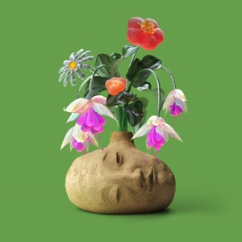
夢境
大象體操
製作名單
製作人：大象體操
愛情一陣風
李權哲
製作名單
製作人：李權哲
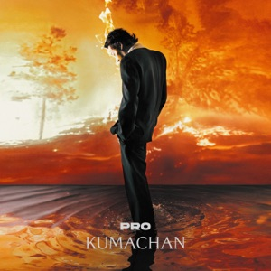
PRO
熊仔
製作名單
製作人：熊仔、rgry、李權哲、FunkyMo
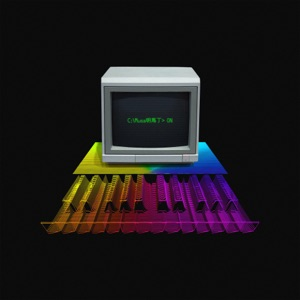
ON
明馬丁
製作名單
製作人：程杰、明馬丁
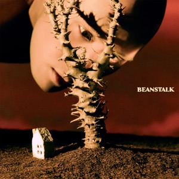
BEANSTALK
YELLOW黃宣
製作名單
製作人：余佳倫、YELLOW黃宣
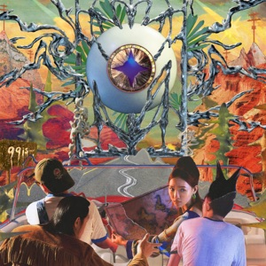
LÜCY
LÜCY
製作名單
製作人：海大富
最佳樂團獎
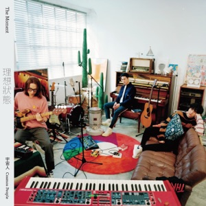
理想狀態
宇宙人
夢境
大象體操
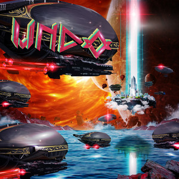
溯
野東西
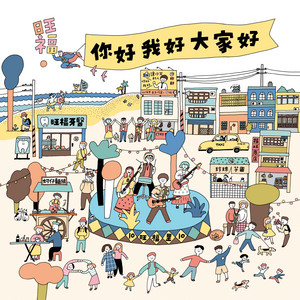
你好我好大家好
旺福
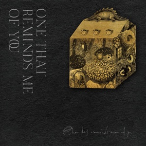
和你蠻像的一隻
13月終了
最佳創作歌手獎
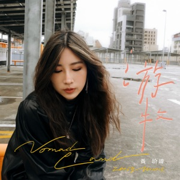
游牧
黃玠瑋
防疫清冰箱
朱頭皮
愛情一陣風
李權哲
活得像自己的名字
葉穎
PRO
熊仔
BEANSTALK
YELLOW黃宣
最佳新人獎
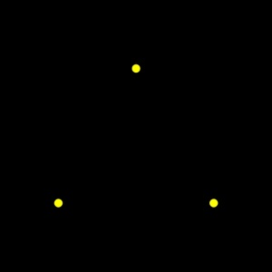
MEmento・MORI
珂拉琪
LOVE MAZE
Haezee黃瑋昕
SYSTEM BOOTING...
Robot Swing
LÜCY
LÜCY
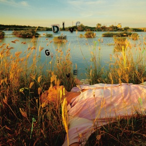
Dive & Give
雷擎
最佳樂手獎
理想狀態
方Q(方奎棠)
樂器：貝斯
製作名單
樂器：貝斯
夢境
張凱婷
樂器：人聲、貝斯、鋼琴
製作名單
樂器：人聲、貝斯、鋼琴
溯
賽克(蔣沅融)
樂器：吉他
製作名單
樂器：吉他
ON
明馬丁
樂器：鋼琴
製作名單
樂器：鋼琴
In My Place
徐研培
樂器：吉他
製作名單
樂器：吉他
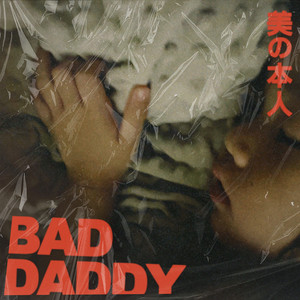
壞爸爸
簡道生
樂器：貝斯
製作名單
樂器：貝斯
長笛節奏盒
鄭宇泰
樂器：長笛
製作名單
樂器：長笛
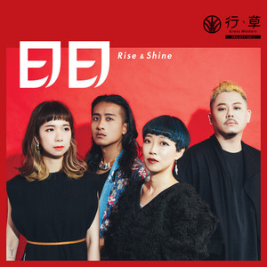
日日
刁鵬
樂器：中國笛/簫
製作名單
樂器：中國笛/簫
最佳現場演出獎
溯
野東西
聲子蟲《A DECADE》
聲子蟲
蘇珮卿 "This Is..." VIP音樂會
蘇珮卿
旺福《俗女的歌》Live音樂會
旺福
百合花不是路專輯發片專場
百合花
亞洲創作音樂獎
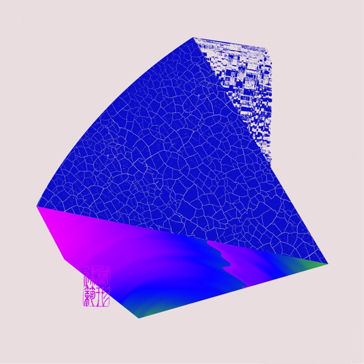
逗號與句號之間
無形建築
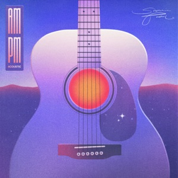
AM:PM (Acoustic)
Stephanie Poetri
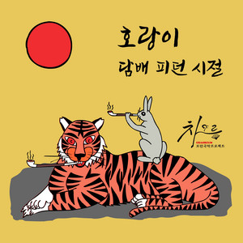
호랑이 담배피던 시절
모던국악프로젝트 차오름
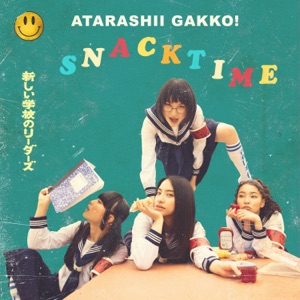
SNACKTIME
ATARASHII GAKKO!
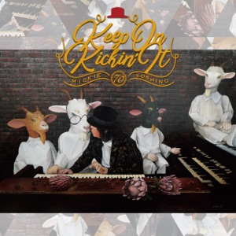
Keep On Kickin' It
Mickie Yoshino
類型音樂獎項
14 個獎項最佳搖滾專輯獎
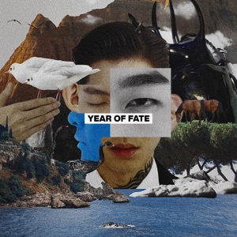
Year of Fate
傻子與白痴
夢境
大象體操
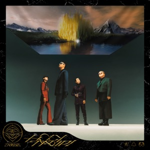
Holy Trip!
TRASH
溯
野東西
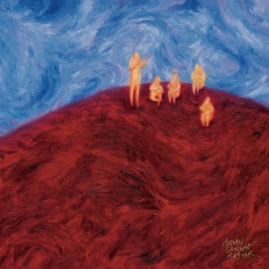
告訴我他們都在本來的什麼地方
當代電影大師
最佳搖滾歌曲獎
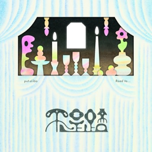
不是路
百合花
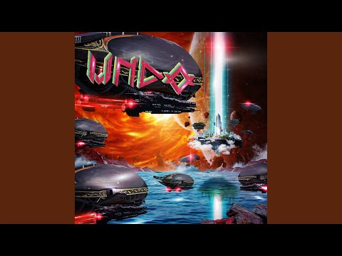
蘭嶼幣
野東西
我要殺光浪漫殺死詩
當代電影大師
傷心地獄芳花引魂
珂拉琪
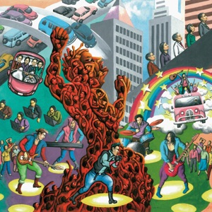
No Mercy
無妄合作社
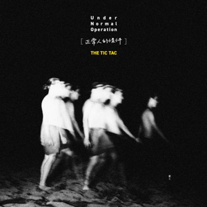
浪潮
The Tic Tac
最佳民謠專輯獎
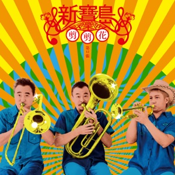
新寶島康樂隊 第12張剪剪花
新寶島康樂隊
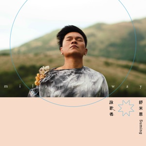
O Milaladiway 詠歌者
Suming 舒米恩(舒米恩・魯碧)
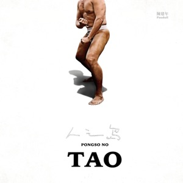
pongso no Tao
陳建年
LÜCY
LÜCY
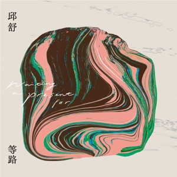
等路
邱舒
最佳民謠歌曲獎
阿喜A車車
新寶島康樂隊
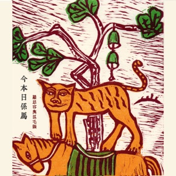
白薯，月光山
羅思容與孤毛頭樂團
莎喲娜拉
旺福
isahini
LÜCY
雙月之下 II
YK樂團
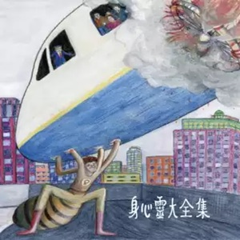
廢人歌
奇哥(蔡坤奇)
最佳嘻哈專輯獎
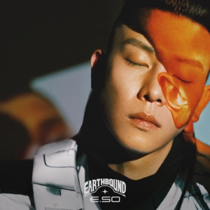
EARTHBOUND
瘦子
姚中二
MC HotDog熱狗
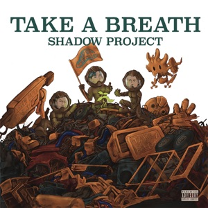
TAKE A BREATH
影子計劃
黃昏
張伍
PRO
熊仔
最佳嘻哈歌曲獎
Way Up
瘦子
他們根本不是Rapper
MC HotDog熱狗
鬼
張伍
能火
熊仔
覺 Ft.大支 (Prod. Huangfu)
草屯囝仔
跑馬燈
ØZI Feat.蛋堡
最佳電音專輯獎
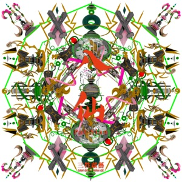
八仙
三牲獻藝
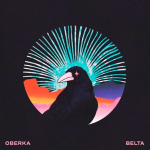
BELTA
Oberka
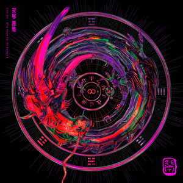
萬象
笑琴
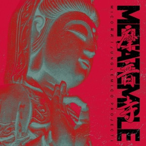
摩音寺
MICO劉為
最佳電音歌曲獎
七匡乙咚
三牲獻藝
King of Bhangra
Oberka
On Friendship (feat. 阿爆(阿仍仍))
明馬丁
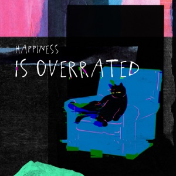
Happiness Is Overrated (feat. Whisky Cat /方Q)
Ń7ä
亞細亞鬥士
沙羅曼蛇
最佳爵士專輯獎
熟
胡朝明
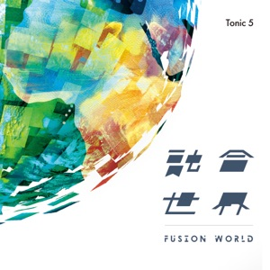
融合世界
Tonic 5
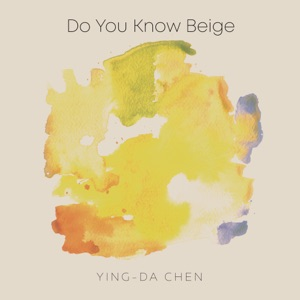
你聽過Beige嗎
陳穎達
最佳爵士歌曲獎
On Truth (feat. 張為智)
明馬丁
給老天爺的悄悄話
陳含章
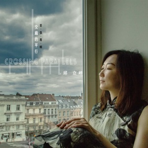
戰鬥前夕
邱立婷爵士樂團
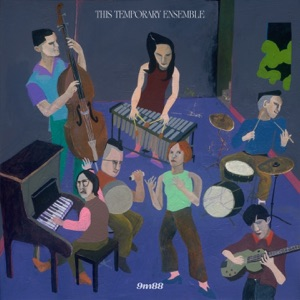
Eyes
9m88
南門路上
薛詒丹
最佳節奏藍調專輯獎
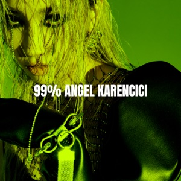
99% Angel
Karencici
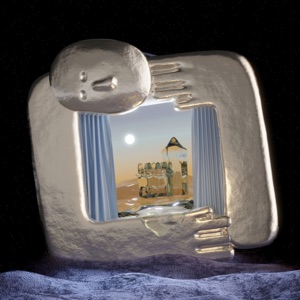
BLUE LEAK / 水體
問題總部
LOVE MAZE
Haezee黃瑋昕
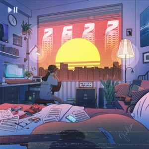
2622
Julia 吳卓源
最佳節奏藍調歌曲獎
99% Angel
Karencici
信你才怪（feat. YELLOW黃宣 ）
Haezee黃瑋昕
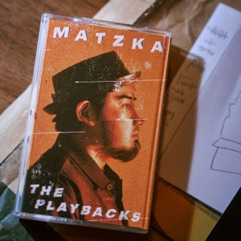
尷尬的浪漫
Matzka 瑪斯卡
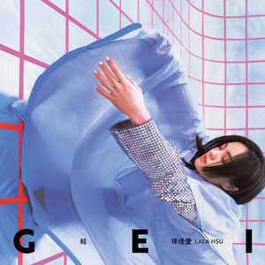
切歌 feat. ABAO阿爆&Brandy
徐佳瑩
Real World
雷擎
最佳另類流行專輯獎
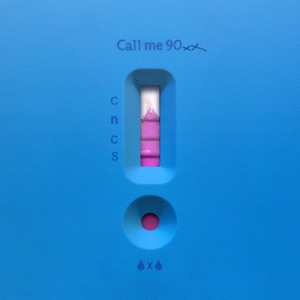
call me 90
Chick en Chicks
愛情一陣風
李權哲
你好我好大家好
旺福
BEANSTALK
YELLOW黃宣
cinevuan 7鄰86號
Matzka 瑪斯卡
和你蠻像的一隻
13月終了
最佳另類流行歌曲獎
游牧
黃玠瑋
新世紀的女兒
鄭宜農
星座學家(feat. 9m88)
熊仔
我和牙醫有個約會
旺福
你們長得蠻像的
13月終了
拉麵公子
鶴
評審團獎
1 個獎項評審團獎
MEmento・MORI
珂拉琪
找不到符合的作品，換個關鍵字試試。